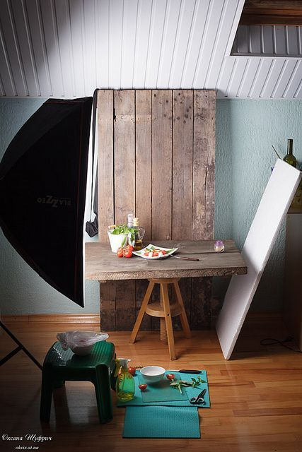
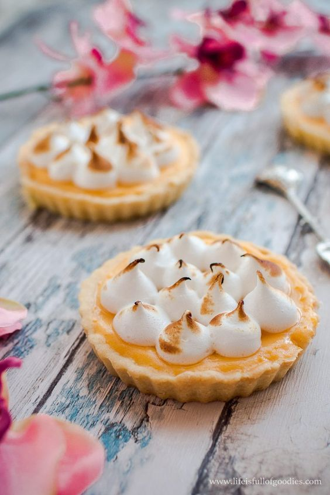

¡Hola, que tal revelad@! ¿Recuerdas el día que te tomaron la foto para el anuario? Apuesto que sacaste a relucir tu mejor ángulo; déjame decirte que lo mismo sucede cuando deseas transmitir el exquisito sabor de tu manjar culinario. La coyuntura sanitaria actual nos obliga a reinventarnos; hoy por hoy, las redes sociales se han convertido en un puente hacia posibles clientes potenciales.
¡Felicitaciones! Si has alcanzado transmitir la esencia de tu marca de forma y si aún no lo haces, has llegado en el momento preciso porque estoy apunto de explicarte cómo lograrlo. Tan solo necesitarás una súper cámara que incluya rayos x para observar los ingredientes, es broma, bastará con tu celular e ingenio creativo.
¿Estás listo para aprender este nuevo mundo? Estás a punto de mejorar aún más tu emprendimiento. Para entendernos mejor, te presento a José, quien es fundador, administrador, asistente de recursos humanos, community manager y repartidor de una repostería; en los tiempos actuales lo llaman emprendedor.
1. Sin iluminación, no hay visión
José es consciente que sin una buena iluminación no puede partir, pues ésta es la que transmite y da sabor a las fotografías; basta con un par de focos blancos situados en un buen lugar, datazo, si la luz es fuerte cúbrela con plástico translúcido o tal vez intenta difuminar con papel de seda; ¿sin presupuesto? Opta por tomar la foto lo más cerca a una ventana o si te es factible, en el exterior al mediodía.
2.Construye la toma
Lo siguiente en la lista de José es implementar la presentación perfecta y la composición para ser exactos. Corre y busca la decoración que te pueda servir para la toma, ¡Cuidado! No la sobrecargues, y nunca pierdas de vista tu producto principal, este siempre debe ser el centro de atención. No te olvides de jugar con una paleta de colores y texturas, como todo revela@ tienes que experimentar y ser creativo.
3.¡No olvidar los detalles!
Antes de capturar tu producto, asegúrate de limpiar con delicadeza el lente de tu dispositivo, enfoca y toma la foto, confío en que sorprenderás a más de uno. José ya es un pro en la fotografía gastronómica, sé como José. Nosotros te brindamos el conocimiento, la magia la haces tú.

¡Ayúdanos!, se nos agotaron las ideas, coméntanos ¿De qué crees que deba tratar nuestro próximo artículo ? Concluyó animándote a equivocarte y volver a intentarlo, sé que tus primeros encuadres son o serán una catástrofe; pero no te desanimes, la práctica hace al maestro. Hasta la próxima Revelad@.